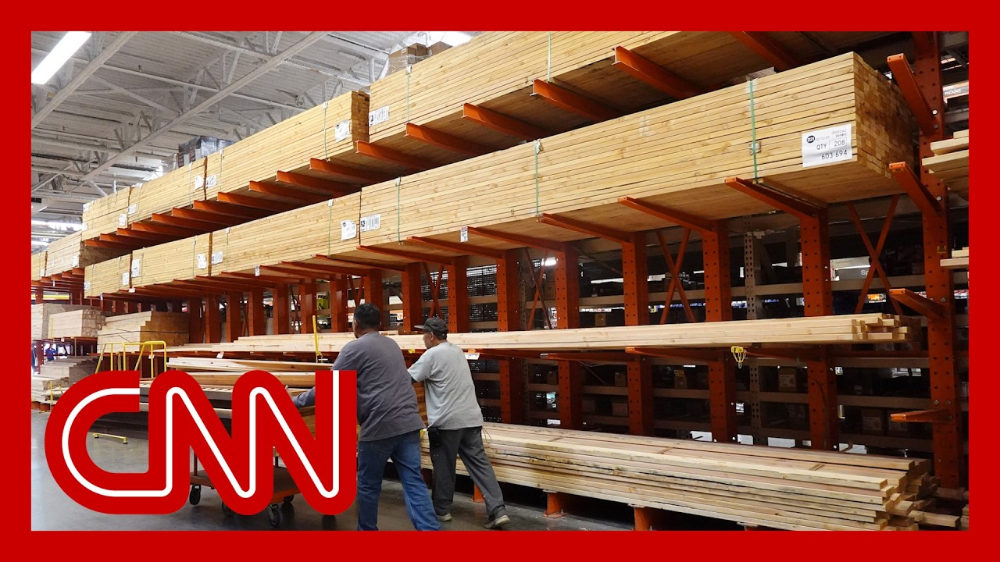

| 标题 | 时长 | 资源链接 | 高考 | 四级 | 六级 | 考研 | 专八 | 雅思 | 托福 | GRE | SAT | 其它生词 |
|---|---|---|---|---|---|---|---|---|---|---|---|---|
| 43:12 | 📄在线文稿 📁离线文稿 📚PDF | 1095 | 898 | 313 | 701 | 32 | 61 | 170 | 125 | 251 | 132 | |

|
32:18 | 📄在线文稿 📁离线文稿 📚PDF | 1132 | 879 | 293 | 744 | 26 | 49 | 176 | 110 | 236 | 119 |
| 6:05 | 📄在线文稿 📁离线文稿 📚PDF | 341 | 209 | 53 | 119 | 4 | 9 | 29 | 23 | 32 | 28 | |
| 12:03 | 📄在线文稿 📁离线文稿 📚PDF | 541 | 397 | 126 | 299 | 16 | 17 | 64 | 61 | 90 | 49 | |
|
 |
10:27 | 📄在线文稿 📁离线文稿 📚PDF | 517 | 354 | 127 | 243 | 11 | 22 | 55 | 48 | 78 | 55 |

|
26:13 | 📄在线文稿 📁离线文稿 📚PDF | 843 | 653 | 221 | 515 | 21 | 32 | 122 | 96 | 172 | 105 |

|
26:16 | 📄在线文稿 📁离线文稿 📚PDF | 880 | 721 | 251 | 557 | 14 | 37 | 130 | 106 | 182 | 100 |
| 23:15 | 📄在线文稿 📁离线文稿 📚PDF | 850 | 669 | 180 | 502 | 24 | 30 | 103 | 82 | 144 | 98 |